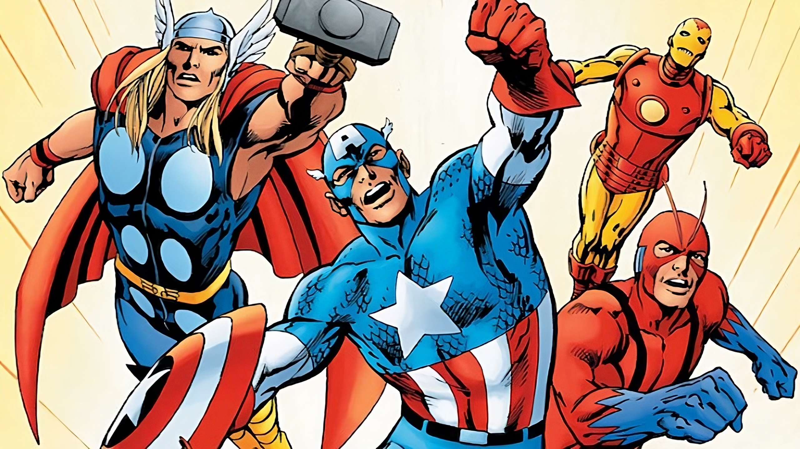

Los Vengadores nacen en 1963 de la mente de Stan Lee y Jack Kirby, como respuesta a la famosa Liga de la Justicia de DC cómic que, por aquel entonces, acaparaba todos los números uno en los rankings de ventas. Aunque hay que destacar que, a diferencia de La Liga de la Justicia, donde sus integrantes eran lo más de lo más de DC (Superman, Batman, WonderWoman…), Los Vengadores que Stan y Jack escogieron para su colección no eran superestrellas de la editorial. No en vano se trataba del grupo más dispar que se había formado hasta la fecha, con Iron Man (que debía sus poderes a la tecnología), Thor (una deidad asgariana), Hulk (una mole de poder y furia incontrolable), El Hombre Hormiga (científico transformado en héroe) y La Avispa (pareja del Hombre Hormiga que obtiene sus poderes de su ciencia). Por aquel entonces, Los Vengadores era una apuesta muy arriesgada con héroes muy raros para la época y tachados de solitarios, obligados por las circunstancias a trabajar en equipo.